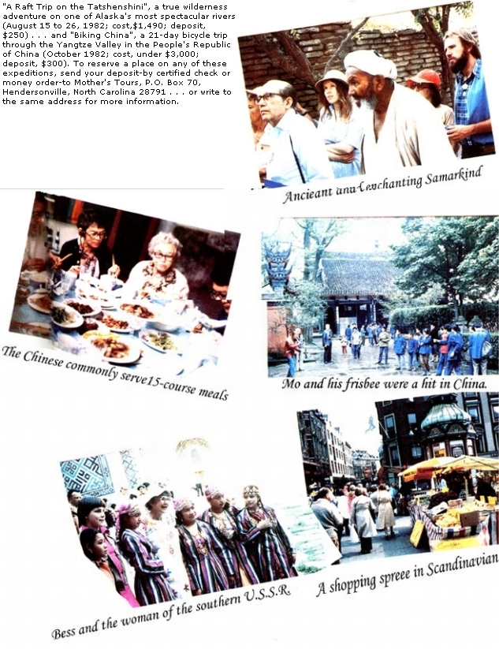

While you're preserving your orchard's produce this fall, recycle the apple-canning leftovers into lovely Christmas gifts!
This year, when you put up the winter's supply of apple products, why not get the jump on your Christmas gift gathering (or holiday profitmaking) at the same time? To do so, you can simply spice, shape, perfume, and dry any leftover pulp into creative, fragrant "pomander sachets" . . . to give to your family and friends or to sell at fall bazaars, fairs, or gift shops that specialize in unique homemade items.
WHAT ARE THEY?
Most of us think of pomanders as clovestudded oranges or apples that have been rolled in spices and dried. In fact, the word itself is derived from the French pomme d'ambre, meaning "apple of amber", which-in turn-refers to ambergris (the original scent used in pomanders and still the base of many perfumes).
However, the current high price of whole cloves and fresh fruit-as well as the time required to completely cover one apple or orange with the tiny spices-can turn the creation of old- fashioned pomanders into a cash- and labor-intensive project. But, by using the tips offered in this article, you can actually go ahead and consume the tasty fruit . . . and then fashion dozens of the long-lasting, aromatic, and useful gifts from the leftover waste!
MAKE "SECONDS" INTO "FIRSTS"
If you don't have your own apple trees, perhaps you can buy "pick your own" (look for inexpensive windfalls) fruit from a nearby orchard, or locate a produce outlet that sells apple "seconds".
Last year, for example, I was able to buy half a bushel of very high-quality "culls" from a rural market for $1.75, and the varied flavors, when cooked and blended, made for exceptionally tasty and colorful applesauce and jelly. In fact-although your results may differ, depending upon the juiciness of the fruit you use and the amount of water added when cooking-four baskets (or $7.00 worth) provided me with 100 eating apples, 20 quarts of applesauce, 6 pints of apple butter, 35 halfpints of jelly, 8 quarts of fresh juice .. . and 200 apple-pulp sachets to market (wholesale) to my herbal outlets. Better yet, the sweet-smelling little globes sold out within a week or two, bringing in an average of 50d each for a total of $100!
PRESERVE THE RESERVE
Orrisroot, a "fixative", is a vital pomander ingredient ... since the substance absorbs the fruity, spicy blend and preserves it for many years. It's made from European iris roots, and-along with essential oils-can usually be obtained from your pharmacy. If not, most herbal mail order businesses carry such items, as well as ground spices that are less expensive and of higher quality than those the grocery usually offers. I'll provide you with a list of catalogs if you send a stamped, self-addressed envelope to me at Herbal Acres, Dept. TMEN, Box 428, Washington Crossing, Pennsylvania 18977. [EDITOR'S NOTE: Please include a dollar for Ms. Shaudys's time and trouble when you do so.]
THE POMANDER RECIPE
To make a batch of recycled sachets, measure out 4 cups of the drained apple pulp left in your colander or food mill (or simply turn the leftover cores into pulp) . . . and stir in the following ground spices: 1 heaping tablespoon of cloves, a little less than a tablespoon of nutmeg, 1-1/2 teaspoons of ginger, and 3 tablespoons of orrisroot. (If you can't obtain powdered orrisroot, simply grind whole pieces of the fixative in your blender.)
When the above ingredients are thoroughly combined, shape the pulp into balls. Then make a blend of 6 tablespoons of powdered orrisroot, 10 to 12 drops of essential oil (I use oil of rose, cloves, ambergris, or patchouli), 1/2 cup of ground cinnamon, and 1/2 cup of ground cloves . .. and roll the balls in the resulting mixture until they begin to feel dry. (This recipe, which may be halved or doubled, will yield about 50 pomanders.)
Now, wrap your scented spheres in squares of organdy (or any other porous fabric that can be easily pinked with shears to produce attractive edges) and hang them up to dry. If you prefer to adorn them with fabric later on, you can let the pulp balls rest in a large glass or plastic container on top of any leftover spice mix, but don't allow them to touch each other. Roll the globes around periodically to expose all sides to the air and to the spices.
I prefer to wrap the aromatic apple scraps in organdy right away, so that a minimum of the spiciness will be lost during the drying process. Also, I've found that the oil of the still-damp spheres permeates the fabric, adding to the strength of the finished pomanders' scent.
Next, I tie the cloth squares with thread or string, and then loop them on a long ribbon to hang from the fireplace mantle (where we already have nail holes used to secure the family's Christmas stockings). The pungent fragrance given off by the drying sachets perfumes the house, and the colorful fabrics seem to give our home an aura of Christmas long before it's actually time to decorate for the holiday.
PACKAGE MAKES PERFECT
Within a week or two, the pomanders will shrink slightly and be dry enough to store in plastic bags until you're ready to wrap them for gifts or package them for sale. As a finishing touch, I cover the little packets with matching squares of net, secured with bows of satin ribbon (which I buy wholesale by the roll from a local floral supply house at the cost of 5d a yard).
The pomander sachets can be packaged in plastic zip-lock bags from your grocery store, three or five to a bag. A descriptive label (you can type one up and photocopy it if you make a large number of the gifts) will add to the product's appeal. Do explain-on your label-that the sachets are a variation of colonial pomanders . . . and that they can be used in closets, drawers, or chests to perfume and to help mothproof your clothing, linens, or blankets.
If you're going to market the pomanders, a printed display card that gives suggestions for using the bright little balls will also help promote sales. I add a sign that reads: "Use to decorate your Christmas tree, wreath, or packages . . . hang in a cluster from the ceiling light . . . or give as fragrant stocking stuffers, party favors, or hostess gifts."
Your recycled apple pulp creations will give you and others many pleasurable moments of aromatic delight over the years. And the scent can even be revived in the distant future, if need be, by adding a few drops of your favorite perfume or oil .. . making the pomanders essentially timeless gifts.
|
|
|
 |